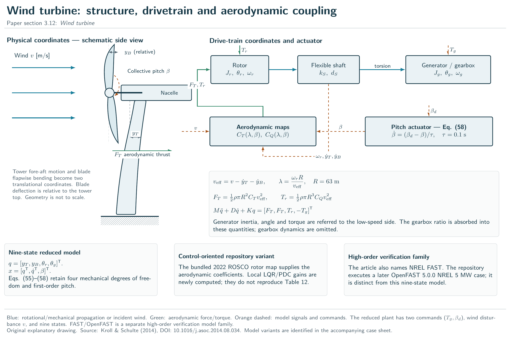
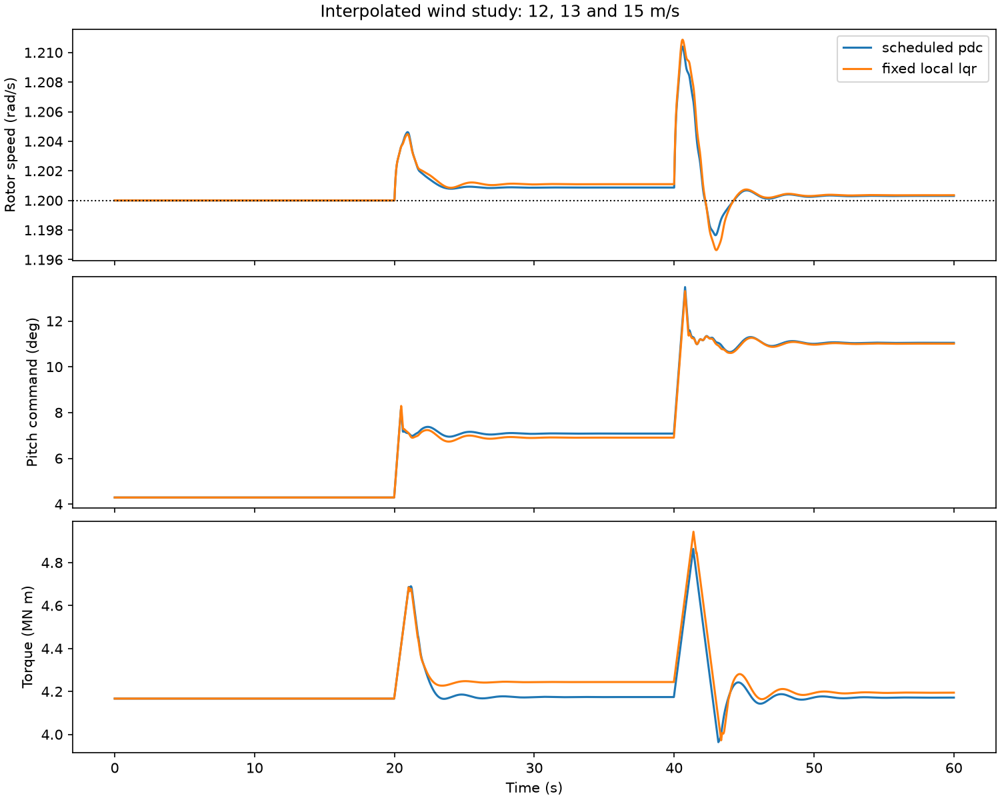

intelligent_control.wind_control
Operating-point LQR and parallel distributed compensation for a wind turbine.
The eight regulation states are tower deflection (m), relative blade deflection (m), shaft torsion (rad), tower/blade velocities (m/s), rotor/generator speeds (rad/s) and pitch (rad). Generator quantities are referred to the low-speed side. Absolute common rotation is eliminated from the nine-state plant. Commands are generator torque (N m) and requested pitch (rad); wind is in m/s and time in seconds.
Use default_map to load the bundled later ROSCO table, design to obtain
local LQR laws and simulate to compare scheduled PDC with a fixed-gain
baseline. controller applies explicit torque/pitch magnitude and slew
limits. variant_rhs exposes a rigid-structure reduction and a separately
declared second-order pitch actuator.
The gains and experiments are a new reproducible design exercise, not recovery
of the article's fitted controller or Table 12. Local Riccati and pole checks
do not establish global nonlinear stability. The source, plant-map version,
information assumptions and comparison protocol are documented in the
repository's benchmarks/WIND_CONTROL.md.
1"""Operating-point LQR and parallel distributed compensation for a wind turbine. 2 3The eight regulation states are tower deflection (m), relative blade deflection 4(m), shaft torsion (rad), tower/blade velocities (m/s), rotor/generator speeds 5(rad/s) and pitch (rad). Generator quantities are referred to the low-speed 6side. Absolute common rotation is eliminated from the nine-state plant. 7Commands are generator torque (N m) and requested pitch (rad); wind is in m/s 8and time in seconds. 9 10Use `default_map` to load the bundled later ROSCO table, `design` to obtain 11local LQR laws and `simulate` to compare scheduled PDC with a fixed-gain 12baseline. `controller` applies explicit torque/pitch magnitude and slew 13limits. `variant_rhs` exposes a rigid-structure reduction and a separately 14declared second-order pitch actuator. 15 16The gains and experiments are a new reproducible design exercise, not recovery 17of the article's fitted controller or Table 12. Local Riccati and pole checks 18do not establish global nonlinear stability. The source, plant-map version, 19information assumptions and comparison protocol are documented in the 20repository's ``benchmarks/WIND_CONTROL.md``. 21""" 22from pathlib import Path 23import numpy as np 24from scipy.linalg import solve_continuous_are 25from scipy.optimize import brentq 26from .benchmarks import RotorMap, wind_rhs 27 28STATE_SCALE = np.array([1., 5., .01, .2, 1., .1, .1, .1]) 29INPUT_SCALE = np.array([1e6, .1]) 30Q = np.diag([1., 1., .2, 1., 1., 100., 100., 1.]) 31R = np.diag([2., 1.]) 32LOWER = np.array([0., 0.]) 33UPPER = np.array([6e6, np.deg2rad(30.)]) 34RATE = np.array([5e5, np.deg2rad(8.)]) 35 36 37def regulation_rhs(state, command, wind, aero): 38 """Evaluate the nonlinear plant after eliminating common shaft rotation. 39 40 Parameters 41 ---------- 42 state : array_like, shape (8,) 43 Tower/blade deflections, shaft torsion, tower/blade velocities, 44 rotor/generator speeds and pitch in the module's SI conventions. 45 command : array_like, shape (2,) 46 Generator torque in N m and requested pitch in rad. 47 wind : float 48 Free-stream wind speed in m/s. 49 aero : callable 50 ``aero(tip_speed_ratio, pitch_radians)`` returns thrust and torque 51 coefficients ``(CT, CQ)``. `default_map` rejects extrapolation. 52 53 Returns 54 ------- 55 numpy.ndarray, shape (8,) 56 State derivative per second, in the same state order. 57 58 Notes 59 ----- 60 This function does not apply actuator limits; use `controller` when 61 simulating the bounded feedback experiment. The underlying plant rejects 62 nonpositive effective wind and out-of-domain aerodynamic lookup. 63 """ 64 x = np.asarray(state, dtype=float) 65 u = np.asarray(command, dtype=float) 66 if x.shape != (8,) or u.shape != (2,): 67 raise ValueError('Expected eight regulation states and two commands') 68 full = np.r_[x[:2], x[2], 0., x[3:7], x[7]] 69 f = wind_rhs(0, full, [wind, u[0], u[1]], aero) 70 return np.r_[x[3:5], x[5]-x[6], f[4:8], f[8]] 71 72 73def equilibrium(wind, aero, speed=1.2, torque=5e6/1.2): 74 """Solve a constant-wind equilibrium from torque and thrust balances. 75 76 Parameters 77 ---------- 78 wind : float 79 Positive free-stream wind speed in m/s. 80 aero : callable 81 Aerodynamic coefficient interface described in `regulation_rhs`. 82 speed : float, optional 83 Positive rotor and low-speed-side generator angular speed in rad/s. 84 torque : float, optional 85 Positive generator torque in N m; default mechanical power is 5 MW. 86 87 Returns 88 ------- 89 state : numpy.ndarray, shape (8,) 90 Absolute regulation coordinates, including nonzero deflections, 91 torsion and pitch. Tower and blade velocities are zero. 92 command : numpy.ndarray, shape (2,) 93 Equilibrium generator torque and requested pitch. 94 95 Notes 96 ----- 97 Pitch is found on ``[0, 30 degrees]`` by a bracketed root solve. A missing 98 bracket or an aerodynamic lookup outside its table raises an error; no 99 extrapolated equilibrium is manufactured. 100 """ 101 if wind <= 0 or speed <= 0 or torque <= 0: 102 raise ValueError('Positive wind, speed and torque required') 103 factor = .5*1.225*np.pi*63**3*wind**2 104 pitch = brentq(lambda b: factor*aero(speed*63/wind, b)[1]-torque, 105 0., np.deg2rad(30.), xtol=1e-14) 106 ct, _ = aero(speed*63/wind, pitch) 107 thrust = .5*1.225*np.pi*63**2*ct*wind**2 108 x = np.array([thrust/1981900., thrust/120000., torque/867637000., 109 0., 0., speed, speed, pitch]) 110 return x, np.array([torque, pitch]) 111 112 113def linearize(state, command, wind, aero): 114 """Compute local state/input Jacobians with centered finite differences. 115 116 State, command, wind and aerodynamic-map conventions match 117 `regulation_rhs`. Perturbations are ``1e-5 * STATE_SCALE`` and 118 ``1e-5 * INPUT_SCALE``. Wind is held fixed; no wind-disturbance column 119 or affine offset is returned. `design` calls this at solved equilibria. 120 121 Returns 122 ------- 123 a : numpy.ndarray, shape (8, 8) 124 State Jacobian in unscaled physical coordinates. 125 b : numpy.ndarray, shape (8, 2) 126 Command Jacobian in unscaled physical coordinates. 127 """ 128 a = np.empty((8, 8)); b = np.empty((8, 2)) 129 for j, scale in enumerate(STATE_SCALE): 130 delta = np.eye(8)[j]*scale*1e-5 131 a[:, j] = (regulation_rhs(state+delta, command, wind, aero)- 132 regulation_rhs(state-delta, command, wind, aero))/(2*scale*1e-5) 133 for j, scale in enumerate(INPUT_SCALE): 134 delta = np.eye(2)[j]*scale*1e-5 135 b[:, j] = (regulation_rhs(state, command+delta, wind, aero)- 136 regulation_rhs(state, command-delta, wind, aero))/(2*scale*1e-5) 137 return a, b 138 139 140def design(aero, winds=(12., 14., 16.)): 141 """Design and check one scaled continuous-time LQR law per operating wind. 142 143 Parameters 144 ---------- 145 aero : callable 146 Aerodynamic coefficient map as in `regulation_rhs`. 147 winds : sequence of float, optional 148 Operating winds in m/s. Use a strictly increasing sequence with at 149 least two points when passing the result to `memberships`. 150 151 Returns 152 ------- 153 list of dict 154 Each record contains ``wind``, equilibrium ``state`` and ``command``, 155 physical-coordinate ``a``/``b`` Jacobians, a ``(2, 8)`` feedback 156 ``gain``, ``care_residual`` (infinity norm in scaled coordinates) 157 and ``max_pole_real`` (1/s). The local law is 158 ``command - gain @ (state - equilibrium_state)``. 159 160 Raises 161 ------ 162 RuntimeError 163 If a local closed-loop pole is not strictly stable or the scaled 164 Riccati residual exceeds ``1e-6``. 165 166 Notes 167 ----- 168 Cost matrices ``Q`` and ``R`` apply in the declared normalized coordinates. 169 These checks concern the local linearizations, not a common Lyapunov 170 certificate for the interpolated nonlinear closed loop. 171 """ 172 points = [] 173 for wind in winds: 174 x, u = equilibrium(wind, aero) 175 a, b = linearize(x, u, wind, aero) 176 an = a*STATE_SCALE[None, :]/STATE_SCALE[:, None] 177 bn = b*INPUT_SCALE[None, :]/STATE_SCALE[:, None] 178 p = solve_continuous_are(an, bn, Q, R) 179 kn = np.linalg.solve(R, bn.T@p) 180 gain = kn*INPUT_SCALE[:, None]/STATE_SCALE[None, :] 181 residual = an.T@p+p@an-p@bn@np.linalg.solve(R, bn.T@p)+Q 182 poles = np.linalg.eigvals(a-b@gain) 183 if np.max(poles.real) >= 0 or np.linalg.norm(residual, np.inf) > 1e-6: 184 raise RuntimeError('Local LQR failed stability or Riccati checks') 185 points.append(dict(wind=float(wind), state=x, command=u, gain=gain, 186 a=a, b=b, care_residual=float(np.linalg.norm(residual, np.inf)), 187 max_pole_real=float(np.max(poles.real)))) 188 return points 189 190 191def memberships(wind, points): 192 """Return adjacent piecewise-linear scheduling weights without extrapolation. 193 194 Parameters 195 ---------- 196 wind : float 197 Finite wind speed in m/s, inside the design interval. 198 points : sequence of dict 199 Records from `design`, with at least two strictly increasing 200 ``wind`` values. 201 202 Returns 203 ------- 204 numpy.ndarray, shape (len(points),) 205 Nonnegative weights summing to one. At most two adjacent entries 206 are active; a grid point selects its own operating law. 207 208 Raises 209 ------ 210 ValueError 211 If the wind or operating grid does not satisfy the stated domain. 212 """ 213 grid = np.array([p['wind'] for p in points]) 214 if len(grid) < 2 or np.any(np.diff(grid) <= 0) or not np.isfinite(wind): 215 raise ValueError('An increasing operating grid and finite wind are required') 216 if wind < grid[0] or wind > grid[-1]: 217 raise ValueError('Scheduling outside the design grid is not supported') 218 j = min(np.searchsorted(grid, wind, side='right')-1, len(grid)-2) 219 alpha = (wind-grid[j])/(grid[j+1]-grid[j]) 220 h = np.zeros(len(grid)); h[j:j+2] = [1-alpha, alpha] 221 return h 222 223 224def controller(state, wind, points, previous, dt, scheduled=True): 225 """Evaluate state feedback and enforce command slew and magnitude limits. 226 227 Parameters 228 ---------- 229 state : numpy.ndarray, shape (8,) 230 Measured full regulation state in the module's SI coordinates. 231 wind : float 232 Current measured wind in m/s, inside the design interval. 233 points : sequence of dict 234 Operating equilibria and local gains returned by `design`. 235 previous : numpy.ndarray, shape (2,) 236 Previously applied torque/pitch command. The intended control loop 237 starts from a feasible equilibrium command. 238 dt : float 239 Positive control sample interval in seconds. 240 scheduled : bool, optional 241 If true, blend the local affine feedback laws using `memberships`. 242 Otherwise use the middle operating point's fixed gain with the same 243 interpolated equilibrium feedforward. 244 245 Returns 246 ------- 247 numpy.ndarray, shape (2,) 248 Applied generator torque (N m) and demanded pitch (rad), limited to 249 ``[0, 6e6]`` N m and ``[0, 30 degrees]``. Slew limits are 250 ``5e5`` N m/s and 8 degrees/s. 251 252 Notes 253 ----- 254 The policy uses full-state and wind measurements and has no integral 255 speed-error state. Interpolation may leave a small steady-state offset. 256 """ 257 if dt <= 0: 258 raise ValueError('Positive control sample time required') 259 h = memberships(wind, points) 260 if scheduled: 261 raw = sum(w*(p['command']-p['gain']@(state-p['state'])) for w, p in zip(h, points)) 262 else: 263 # Same wind scheduling and equilibrium feedforward; one fixed middle gain. 264 xeq = sum(w*p['state'] for w, p in zip(h, points)) 265 ueq = sum(w*p['command'] for w, p in zip(h, points)) 266 raw = ueq-points[len(points)//2]['gain']@(state-xeq) 267 return np.clip(previous+np.clip(raw-previous, -RATE*dt, RATE*dt), LOWER, UPPER) 268 269 270def simulate(aero, points=None, scheduled=True, duration=60., dt=.02): 271 """Run a held-command nonlinear wind-control experiment with fixed-step RK4. 272 273 Parameters 274 ---------- 275 aero : callable 276 Aerodynamic coefficient map as in `regulation_rhs`. 277 points : sequence of dict, optional 278 Design records; omitted records are constructed by `design`. 279 scheduled : bool, optional 280 Select scheduled PDC or the matched fixed-middle-gain baseline. 281 duration : float, optional 282 Positive finite horizon in seconds, a whole number of sample periods. 283 dt : float, optional 284 Positive control and RK4 integration period in seconds. 285 286 Returns 287 ------- 288 dict 289 ``time`` and ``wind`` are length-N arrays; ``state`` has shape 290 ``(N, 8)`` and ``command`` has shape ``(N, 2)``. The final command 291 repeats the last applied command. ``speed_rmse`` and 292 ``speed_peak_error`` are measured against 1.2 rad/s; 293 ``pitch_peak_deg`` reports the maximum actual pitch in degrees. 294 295 Notes 296 ----- 297 The initial state is the 12 m/s equilibrium. Wind becomes 13 m/s at 298 20 s and 15 m/s at 40 s, exercising interior scheduling points. Inputs 299 and wind are held through each integration step. This is a deterministic 300 simulated experiment, not historical wind data or a robustness proof. 301 """ 302 if not np.isfinite(dt) or not np.isfinite(duration) or dt <= 0 or duration <= 0: 303 raise ValueError('Positive finite duration and sample period required') 304 points = design(aero) if points is None else points 305 n = int(round(duration/dt))+1 306 if not np.isclose((n-1)*dt, duration): 307 raise ValueError('Duration must be a positive whole number of sample periods') 308 t = np.arange(n)*dt 309 # Interior points exercise two active memberships, not only switched gains. 310 wind = np.where(t < 20., 12., np.where(t < 40., 13., 15.)) 311 x = np.empty((n, 8)); u = np.empty((n, 2)) 312 x[0], previous = equilibrium(wind[0], aero) 313 for k in range(n-1): 314 u[k] = controller(x[k], wind[k], points, previous, dt, scheduled) 315 rhs = lambda z: regulation_rhs(z, u[k], wind[k], aero) 316 a = rhs(x[k]); b = rhs(x[k]+dt*a/2); c = rhs(x[k]+dt*b/2); d = rhs(x[k]+dt*c) 317 x[k+1] = x[k]+dt*(a+2*b+2*c+d)/6 318 previous = u[k] 319 u[-1] = u[-2] 320 if not np.isfinite(x).all(): 321 raise RuntimeError('Nonfinite wind trajectory') 322 return dict(time=t, wind=wind, state=x, command=u, 323 speed_rmse=float(np.sqrt(np.mean((x[:, 5]-1.2)**2))), 324 speed_peak_error=float(np.max(np.abs(x[:, 5]-1.2))), 325 pitch_peak_deg=float(np.rad2deg(x[:, 7].max()))) 326 327 328def default_map(): 329 """Load the bundled NREL 5 MW ROSCO table as a `RotorMap`. 330 331 The file is ``benchmarks/data/Cp_Ct_Cq.NREL5MW.txt`` relative to the 332 repository root. Keep that data file with the Python source when moving 333 the project. This later-map variant does not recover the exact table 334 behind the article's original controller comparison. 335 """ 336 return RotorMap(Path(__file__).resolve().parents[2]/'benchmarks/data/Cp_Ct_Cq.NREL5MW.txt') 337 338 339def variant_rhs(state, command, wind, aero, variant, frequency=10., damping=1.): 340 """Explicit structural reduction or declared second-order pitch extension. 341 342 rigid_structure: [torsion, rotor speed, generator speed, pitch]. 343 second_order_pitch: eight regulation states followed by pitch rate. 344 The added actuator parameters are study choices, not recovered article data. 345 """ 346 x = np.asarray(state, dtype=float) 347 if variant == 'rigid_structure' and x.shape == (4,): 348 full = np.array([0., 0., x[0], 0., 0., x[1], x[2], x[3]]) 349 f = regulation_rhs(full, command, wind, aero) 350 return f[[2, 5, 6, 7]] 351 if variant == 'second_order_pitch' and x.shape == (9,): 352 if frequency <= 0 or damping <= 0: 353 raise ValueError('Positive actuator frequency and damping required') 354 f = regulation_rhs(x[:8], command, wind, aero) 355 f[-1] = x[-1] 356 return np.r_[f, frequency**2*(command[1]-x[7])-2*damping*frequency*x[-1]] 357 raise ValueError('Unknown variant or incompatible state dimension')
Illustrated guide
Equipment, information flow and computed evidence. Captions distinguish nonlinear records from fitted-predictor exercises.


38def regulation_rhs(state, command, wind, aero): 39 """Evaluate the nonlinear plant after eliminating common shaft rotation. 40 41 Parameters 42 ---------- 43 state : array_like, shape (8,) 44 Tower/blade deflections, shaft torsion, tower/blade velocities, 45 rotor/generator speeds and pitch in the module's SI conventions. 46 command : array_like, shape (2,) 47 Generator torque in N m and requested pitch in rad. 48 wind : float 49 Free-stream wind speed in m/s. 50 aero : callable 51 ``aero(tip_speed_ratio, pitch_radians)`` returns thrust and torque 52 coefficients ``(CT, CQ)``. `default_map` rejects extrapolation. 53 54 Returns 55 ------- 56 numpy.ndarray, shape (8,) 57 State derivative per second, in the same state order. 58 59 Notes 60 ----- 61 This function does not apply actuator limits; use `controller` when 62 simulating the bounded feedback experiment. The underlying plant rejects 63 nonpositive effective wind and out-of-domain aerodynamic lookup. 64 """ 65 x = np.asarray(state, dtype=float) 66 u = np.asarray(command, dtype=float) 67 if x.shape != (8,) or u.shape != (2,): 68 raise ValueError('Expected eight regulation states and two commands') 69 full = np.r_[x[:2], x[2], 0., x[3:7], x[7]] 70 f = wind_rhs(0, full, [wind, u[0], u[1]], aero) 71 return np.r_[x[3:5], x[5]-x[6], f[4:8], f[8]]
Evaluate the nonlinear plant after eliminating common shaft rotation.
Parameters
- state (array_like, shape (8,)): Tower/blade deflections, shaft torsion, tower/blade velocities, rotor/generator speeds and pitch in the module's SI conventions.
- command (array_like, shape (2,)): Generator torque in N m and requested pitch in rad.
- wind (float): Free-stream wind speed in m/s.
- aero (callable):
aero(tip_speed_ratio, pitch_radians)returns thrust and torque coefficients(CT, CQ).default_maprejects extrapolation.
Returns
- numpy.ndarray, shape (8,): State derivative per second, in the same state order.
Notes
This function does not apply actuator limits; use controller when
simulating the bounded feedback experiment. The underlying plant rejects
nonpositive effective wind and out-of-domain aerodynamic lookup.
74def equilibrium(wind, aero, speed=1.2, torque=5e6/1.2): 75 """Solve a constant-wind equilibrium from torque and thrust balances. 76 77 Parameters 78 ---------- 79 wind : float 80 Positive free-stream wind speed in m/s. 81 aero : callable 82 Aerodynamic coefficient interface described in `regulation_rhs`. 83 speed : float, optional 84 Positive rotor and low-speed-side generator angular speed in rad/s. 85 torque : float, optional 86 Positive generator torque in N m; default mechanical power is 5 MW. 87 88 Returns 89 ------- 90 state : numpy.ndarray, shape (8,) 91 Absolute regulation coordinates, including nonzero deflections, 92 torsion and pitch. Tower and blade velocities are zero. 93 command : numpy.ndarray, shape (2,) 94 Equilibrium generator torque and requested pitch. 95 96 Notes 97 ----- 98 Pitch is found on ``[0, 30 degrees]`` by a bracketed root solve. A missing 99 bracket or an aerodynamic lookup outside its table raises an error; no 100 extrapolated equilibrium is manufactured. 101 """ 102 if wind <= 0 or speed <= 0 or torque <= 0: 103 raise ValueError('Positive wind, speed and torque required') 104 factor = .5*1.225*np.pi*63**3*wind**2 105 pitch = brentq(lambda b: factor*aero(speed*63/wind, b)[1]-torque, 106 0., np.deg2rad(30.), xtol=1e-14) 107 ct, _ = aero(speed*63/wind, pitch) 108 thrust = .5*1.225*np.pi*63**2*ct*wind**2 109 x = np.array([thrust/1981900., thrust/120000., torque/867637000., 110 0., 0., speed, speed, pitch]) 111 return x, np.array([torque, pitch])
Solve a constant-wind equilibrium from torque and thrust balances.
Parameters
- wind (float): Positive free-stream wind speed in m/s.
- aero (callable):
Aerodynamic coefficient interface described in
regulation_rhs. - speed (float, optional): Positive rotor and low-speed-side generator angular speed in rad/s.
- torque (float, optional): Positive generator torque in N m; default mechanical power is 5 MW.
Returns
- state (numpy.ndarray, shape (8,)): Absolute regulation coordinates, including nonzero deflections, torsion and pitch. Tower and blade velocities are zero.
- command (numpy.ndarray, shape (2,)): Equilibrium generator torque and requested pitch.
Notes
Pitch is found on [0, 30 degrees] by a bracketed root solve. A missing
bracket or an aerodynamic lookup outside its table raises an error; no
extrapolated equilibrium is manufactured.
114def linearize(state, command, wind, aero): 115 """Compute local state/input Jacobians with centered finite differences. 116 117 State, command, wind and aerodynamic-map conventions match 118 `regulation_rhs`. Perturbations are ``1e-5 * STATE_SCALE`` and 119 ``1e-5 * INPUT_SCALE``. Wind is held fixed; no wind-disturbance column 120 or affine offset is returned. `design` calls this at solved equilibria. 121 122 Returns 123 ------- 124 a : numpy.ndarray, shape (8, 8) 125 State Jacobian in unscaled physical coordinates. 126 b : numpy.ndarray, shape (8, 2) 127 Command Jacobian in unscaled physical coordinates. 128 """ 129 a = np.empty((8, 8)); b = np.empty((8, 2)) 130 for j, scale in enumerate(STATE_SCALE): 131 delta = np.eye(8)[j]*scale*1e-5 132 a[:, j] = (regulation_rhs(state+delta, command, wind, aero)- 133 regulation_rhs(state-delta, command, wind, aero))/(2*scale*1e-5) 134 for j, scale in enumerate(INPUT_SCALE): 135 delta = np.eye(2)[j]*scale*1e-5 136 b[:, j] = (regulation_rhs(state, command+delta, wind, aero)- 137 regulation_rhs(state, command-delta, wind, aero))/(2*scale*1e-5) 138 return a, b
Compute local state/input Jacobians with centered finite differences.
State, command, wind and aerodynamic-map conventions match
regulation_rhs. Perturbations are 1e-5 * STATE_SCALE and
1e-5 * INPUT_SCALE. Wind is held fixed; no wind-disturbance column
or affine offset is returned. design calls this at solved equilibria.
Returns
- a (numpy.ndarray, shape (8, 8)): State Jacobian in unscaled physical coordinates.
- b (numpy.ndarray, shape (8, 2)): Command Jacobian in unscaled physical coordinates.
141def design(aero, winds=(12., 14., 16.)): 142 """Design and check one scaled continuous-time LQR law per operating wind. 143 144 Parameters 145 ---------- 146 aero : callable 147 Aerodynamic coefficient map as in `regulation_rhs`. 148 winds : sequence of float, optional 149 Operating winds in m/s. Use a strictly increasing sequence with at 150 least two points when passing the result to `memberships`. 151 152 Returns 153 ------- 154 list of dict 155 Each record contains ``wind``, equilibrium ``state`` and ``command``, 156 physical-coordinate ``a``/``b`` Jacobians, a ``(2, 8)`` feedback 157 ``gain``, ``care_residual`` (infinity norm in scaled coordinates) 158 and ``max_pole_real`` (1/s). The local law is 159 ``command - gain @ (state - equilibrium_state)``. 160 161 Raises 162 ------ 163 RuntimeError 164 If a local closed-loop pole is not strictly stable or the scaled 165 Riccati residual exceeds ``1e-6``. 166 167 Notes 168 ----- 169 Cost matrices ``Q`` and ``R`` apply in the declared normalized coordinates. 170 These checks concern the local linearizations, not a common Lyapunov 171 certificate for the interpolated nonlinear closed loop. 172 """ 173 points = [] 174 for wind in winds: 175 x, u = equilibrium(wind, aero) 176 a, b = linearize(x, u, wind, aero) 177 an = a*STATE_SCALE[None, :]/STATE_SCALE[:, None] 178 bn = b*INPUT_SCALE[None, :]/STATE_SCALE[:, None] 179 p = solve_continuous_are(an, bn, Q, R) 180 kn = np.linalg.solve(R, bn.T@p) 181 gain = kn*INPUT_SCALE[:, None]/STATE_SCALE[None, :] 182 residual = an.T@p+p@an-p@bn@np.linalg.solve(R, bn.T@p)+Q 183 poles = np.linalg.eigvals(a-b@gain) 184 if np.max(poles.real) >= 0 or np.linalg.norm(residual, np.inf) > 1e-6: 185 raise RuntimeError('Local LQR failed stability or Riccati checks') 186 points.append(dict(wind=float(wind), state=x, command=u, gain=gain, 187 a=a, b=b, care_residual=float(np.linalg.norm(residual, np.inf)), 188 max_pole_real=float(np.max(poles.real)))) 189 return points
Design and check one scaled continuous-time LQR law per operating wind.
Parameters
- aero (callable):
Aerodynamic coefficient map as in
regulation_rhs. - winds (sequence of float, optional):
Operating winds in m/s. Use a strictly increasing sequence with at
least two points when passing the result to
memberships.
Returns
- list of dict: Each record contains
wind, equilibriumstateandcommand, physical-coordinatea/bJacobians, a(2, 8)feedbackgain,care_residual(infinity norm in scaled coordinates) andmax_pole_real(1/s). The local law iscommand - gain @ (state - equilibrium_state).
Raises
- RuntimeError: If a local closed-loop pole is not strictly stable or the scaled
Riccati residual exceeds
1e-6.
Notes
Cost matrices Q and R apply in the declared normalized coordinates.
These checks concern the local linearizations, not a common Lyapunov
certificate for the interpolated nonlinear closed loop.
192def memberships(wind, points): 193 """Return adjacent piecewise-linear scheduling weights without extrapolation. 194 195 Parameters 196 ---------- 197 wind : float 198 Finite wind speed in m/s, inside the design interval. 199 points : sequence of dict 200 Records from `design`, with at least two strictly increasing 201 ``wind`` values. 202 203 Returns 204 ------- 205 numpy.ndarray, shape (len(points),) 206 Nonnegative weights summing to one. At most two adjacent entries 207 are active; a grid point selects its own operating law. 208 209 Raises 210 ------ 211 ValueError 212 If the wind or operating grid does not satisfy the stated domain. 213 """ 214 grid = np.array([p['wind'] for p in points]) 215 if len(grid) < 2 or np.any(np.diff(grid) <= 0) or not np.isfinite(wind): 216 raise ValueError('An increasing operating grid and finite wind are required') 217 if wind < grid[0] or wind > grid[-1]: 218 raise ValueError('Scheduling outside the design grid is not supported') 219 j = min(np.searchsorted(grid, wind, side='right')-1, len(grid)-2) 220 alpha = (wind-grid[j])/(grid[j+1]-grid[j]) 221 h = np.zeros(len(grid)); h[j:j+2] = [1-alpha, alpha] 222 return h
Return adjacent piecewise-linear scheduling weights without extrapolation.
Parameters
- wind (float): Finite wind speed in m/s, inside the design interval.
- points (sequence of dict):
Records from
design, with at least two strictly increasingwindvalues.
Returns
- numpy.ndarray, shape (len(points),): Nonnegative weights summing to one. At most two adjacent entries are active; a grid point selects its own operating law.
Raises
- ValueError: If the wind or operating grid does not satisfy the stated domain.
225def controller(state, wind, points, previous, dt, scheduled=True): 226 """Evaluate state feedback and enforce command slew and magnitude limits. 227 228 Parameters 229 ---------- 230 state : numpy.ndarray, shape (8,) 231 Measured full regulation state in the module's SI coordinates. 232 wind : float 233 Current measured wind in m/s, inside the design interval. 234 points : sequence of dict 235 Operating equilibria and local gains returned by `design`. 236 previous : numpy.ndarray, shape (2,) 237 Previously applied torque/pitch command. The intended control loop 238 starts from a feasible equilibrium command. 239 dt : float 240 Positive control sample interval in seconds. 241 scheduled : bool, optional 242 If true, blend the local affine feedback laws using `memberships`. 243 Otherwise use the middle operating point's fixed gain with the same 244 interpolated equilibrium feedforward. 245 246 Returns 247 ------- 248 numpy.ndarray, shape (2,) 249 Applied generator torque (N m) and demanded pitch (rad), limited to 250 ``[0, 6e6]`` N m and ``[0, 30 degrees]``. Slew limits are 251 ``5e5`` N m/s and 8 degrees/s. 252 253 Notes 254 ----- 255 The policy uses full-state and wind measurements and has no integral 256 speed-error state. Interpolation may leave a small steady-state offset. 257 """ 258 if dt <= 0: 259 raise ValueError('Positive control sample time required') 260 h = memberships(wind, points) 261 if scheduled: 262 raw = sum(w*(p['command']-p['gain']@(state-p['state'])) for w, p in zip(h, points)) 263 else: 264 # Same wind scheduling and equilibrium feedforward; one fixed middle gain. 265 xeq = sum(w*p['state'] for w, p in zip(h, points)) 266 ueq = sum(w*p['command'] for w, p in zip(h, points)) 267 raw = ueq-points[len(points)//2]['gain']@(state-xeq) 268 return np.clip(previous+np.clip(raw-previous, -RATE*dt, RATE*dt), LOWER, UPPER)
Evaluate state feedback and enforce command slew and magnitude limits.
Parameters
- state (numpy.ndarray, shape (8,)): Measured full regulation state in the module's SI coordinates.
- wind (float): Current measured wind in m/s, inside the design interval.
- points (sequence of dict):
Operating equilibria and local gains returned by
design. - previous (numpy.ndarray, shape (2,)): Previously applied torque/pitch command. The intended control loop starts from a feasible equilibrium command.
- dt (float): Positive control sample interval in seconds.
- scheduled (bool, optional):
If true, blend the local affine feedback laws using
memberships. Otherwise use the middle operating point's fixed gain with the same interpolated equilibrium feedforward.
Returns
- numpy.ndarray, shape (2,): Applied generator torque (N m) and demanded pitch (rad), limited to
[0, 6e6]N m and[0, 30 degrees]. Slew limits are5e5N m/s and 8 degrees/s.
Notes
The policy uses full-state and wind measurements and has no integral speed-error state. Interpolation may leave a small steady-state offset.
271def simulate(aero, points=None, scheduled=True, duration=60., dt=.02): 272 """Run a held-command nonlinear wind-control experiment with fixed-step RK4. 273 274 Parameters 275 ---------- 276 aero : callable 277 Aerodynamic coefficient map as in `regulation_rhs`. 278 points : sequence of dict, optional 279 Design records; omitted records are constructed by `design`. 280 scheduled : bool, optional 281 Select scheduled PDC or the matched fixed-middle-gain baseline. 282 duration : float, optional 283 Positive finite horizon in seconds, a whole number of sample periods. 284 dt : float, optional 285 Positive control and RK4 integration period in seconds. 286 287 Returns 288 ------- 289 dict 290 ``time`` and ``wind`` are length-N arrays; ``state`` has shape 291 ``(N, 8)`` and ``command`` has shape ``(N, 2)``. The final command 292 repeats the last applied command. ``speed_rmse`` and 293 ``speed_peak_error`` are measured against 1.2 rad/s; 294 ``pitch_peak_deg`` reports the maximum actual pitch in degrees. 295 296 Notes 297 ----- 298 The initial state is the 12 m/s equilibrium. Wind becomes 13 m/s at 299 20 s and 15 m/s at 40 s, exercising interior scheduling points. Inputs 300 and wind are held through each integration step. This is a deterministic 301 simulated experiment, not historical wind data or a robustness proof. 302 """ 303 if not np.isfinite(dt) or not np.isfinite(duration) or dt <= 0 or duration <= 0: 304 raise ValueError('Positive finite duration and sample period required') 305 points = design(aero) if points is None else points 306 n = int(round(duration/dt))+1 307 if not np.isclose((n-1)*dt, duration): 308 raise ValueError('Duration must be a positive whole number of sample periods') 309 t = np.arange(n)*dt 310 # Interior points exercise two active memberships, not only switched gains. 311 wind = np.where(t < 20., 12., np.where(t < 40., 13., 15.)) 312 x = np.empty((n, 8)); u = np.empty((n, 2)) 313 x[0], previous = equilibrium(wind[0], aero) 314 for k in range(n-1): 315 u[k] = controller(x[k], wind[k], points, previous, dt, scheduled) 316 rhs = lambda z: regulation_rhs(z, u[k], wind[k], aero) 317 a = rhs(x[k]); b = rhs(x[k]+dt*a/2); c = rhs(x[k]+dt*b/2); d = rhs(x[k]+dt*c) 318 x[k+1] = x[k]+dt*(a+2*b+2*c+d)/6 319 previous = u[k] 320 u[-1] = u[-2] 321 if not np.isfinite(x).all(): 322 raise RuntimeError('Nonfinite wind trajectory') 323 return dict(time=t, wind=wind, state=x, command=u, 324 speed_rmse=float(np.sqrt(np.mean((x[:, 5]-1.2)**2))), 325 speed_peak_error=float(np.max(np.abs(x[:, 5]-1.2))), 326 pitch_peak_deg=float(np.rad2deg(x[:, 7].max())))
Run a held-command nonlinear wind-control experiment with fixed-step RK4.
Parameters
- aero (callable):
Aerodynamic coefficient map as in
regulation_rhs. - points (sequence of dict, optional):
Design records; omitted records are constructed by
design. - scheduled (bool, optional): Select scheduled PDC or the matched fixed-middle-gain baseline.
- duration (float, optional): Positive finite horizon in seconds, a whole number of sample periods.
- dt (float, optional): Positive control and RK4 integration period in seconds.
Returns
- dict:
timeandwindare length-N arrays;statehas shape(N, 8)andcommandhas shape(N, 2). The final command repeats the last applied command.speed_rmseandspeed_peak_errorare measured against 1.2 rad/s;pitch_peak_degreports the maximum actual pitch in degrees.
Notes
The initial state is the 12 m/s equilibrium. Wind becomes 13 m/s at 20 s and 15 m/s at 40 s, exercising interior scheduling points. Inputs and wind are held through each integration step. This is a deterministic simulated experiment, not historical wind data or a robustness proof.
329def default_map(): 330 """Load the bundled NREL 5 MW ROSCO table as a `RotorMap`. 331 332 The file is ``benchmarks/data/Cp_Ct_Cq.NREL5MW.txt`` relative to the 333 repository root. Keep that data file with the Python source when moving 334 the project. This later-map variant does not recover the exact table 335 behind the article's original controller comparison. 336 """ 337 return RotorMap(Path(__file__).resolve().parents[2]/'benchmarks/data/Cp_Ct_Cq.NREL5MW.txt')
Load the bundled NREL 5 MW ROSCO table as a RotorMap.
The file is benchmarks/data/Cp_Ct_Cq.NREL5MW.txt relative to the
repository root. Keep that data file with the Python source when moving
the project. This later-map variant does not recover the exact table
behind the article's original controller comparison.
340def variant_rhs(state, command, wind, aero, variant, frequency=10., damping=1.): 341 """Explicit structural reduction or declared second-order pitch extension. 342 343 rigid_structure: [torsion, rotor speed, generator speed, pitch]. 344 second_order_pitch: eight regulation states followed by pitch rate. 345 The added actuator parameters are study choices, not recovered article data. 346 """ 347 x = np.asarray(state, dtype=float) 348 if variant == 'rigid_structure' and x.shape == (4,): 349 full = np.array([0., 0., x[0], 0., 0., x[1], x[2], x[3]]) 350 f = regulation_rhs(full, command, wind, aero) 351 return f[[2, 5, 6, 7]] 352 if variant == 'second_order_pitch' and x.shape == (9,): 353 if frequency <= 0 or damping <= 0: 354 raise ValueError('Positive actuator frequency and damping required') 355 f = regulation_rhs(x[:8], command, wind, aero) 356 f[-1] = x[-1] 357 return np.r_[f, frequency**2*(command[1]-x[7])-2*damping*frequency*x[-1]] 358 raise ValueError('Unknown variant or incompatible state dimension')
Explicit structural reduction or declared second-order pitch extension.
rigid_structure: [torsion, rotor speed, generator speed, pitch]. second_order_pitch: eight regulation states followed by pitch rate. The added actuator parameters are study choices, not recovered article data.